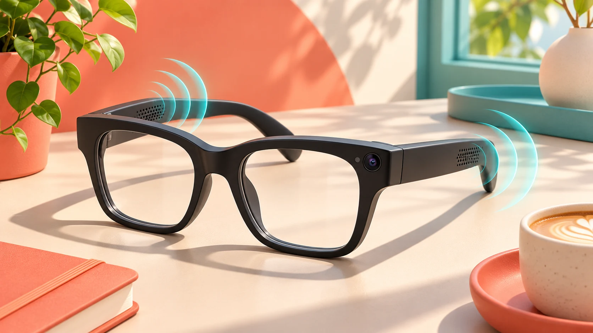

Wearables · Field note 061
Warby Parker sets November 12 preorders for its Android XR glasses
The first Intelligent Eyewear collection is expected to reach customers during the holiday season.

Warby Parker’s first Intelligent Eyewear collection will open for preorders on November 12, 2026. Co-CEO Dave Gilboa confirmed the date in the company’s November 5 earnings announcement, with customer deliveries planned for the holiday season.
9to5Google reports that these Android XR glasses combine audio and a camera without an in-lens display. Voice commands and a touchpad on the side provide controls.
The report identifies Samsung as the underlying hardware manufacturer and Qualcomm as the chip supplier, with Warby Parker and Gentle Monster handling designs across the eyewear partnership.
The timing still leaves a gap for prospective buyers: holiday-season delivery is a broad window, and the announcement does not give a specific shipping day. November 12 is the preorder milestone, rather than a confirmed arrival date.